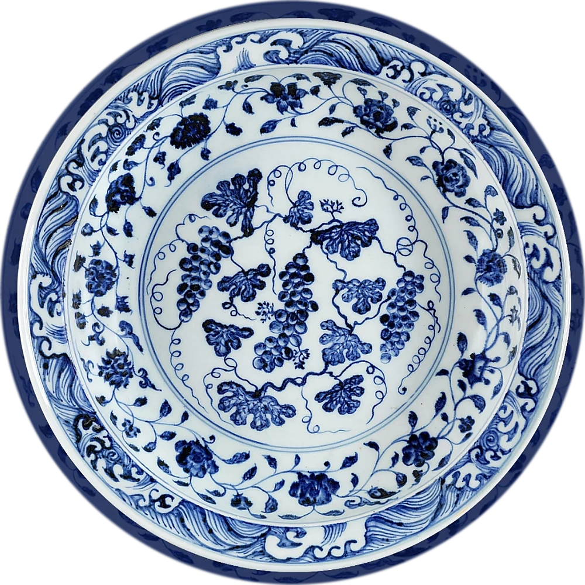
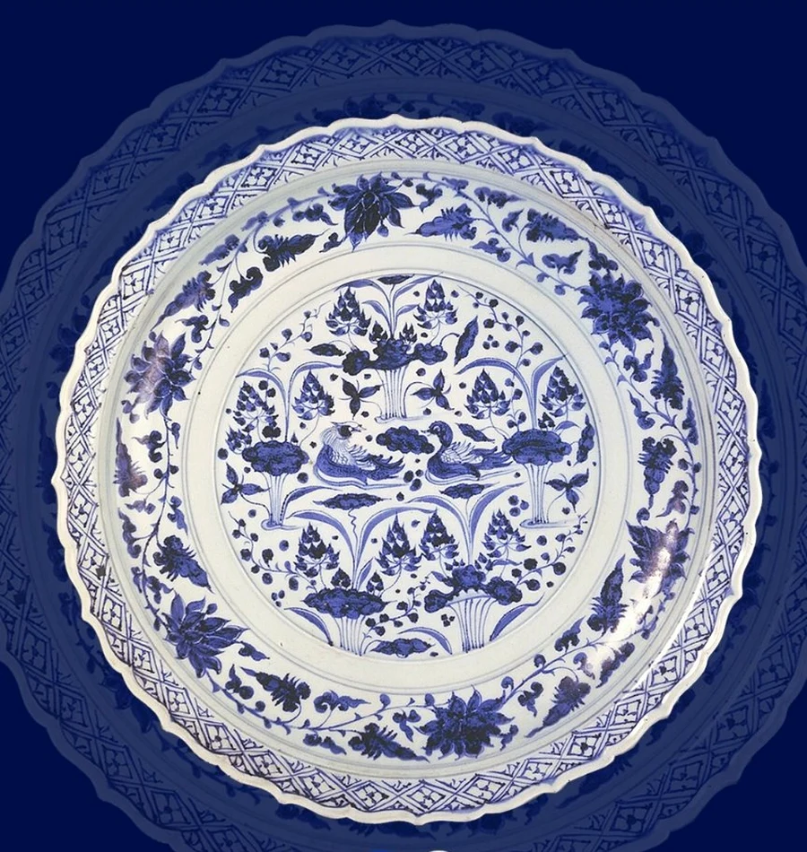
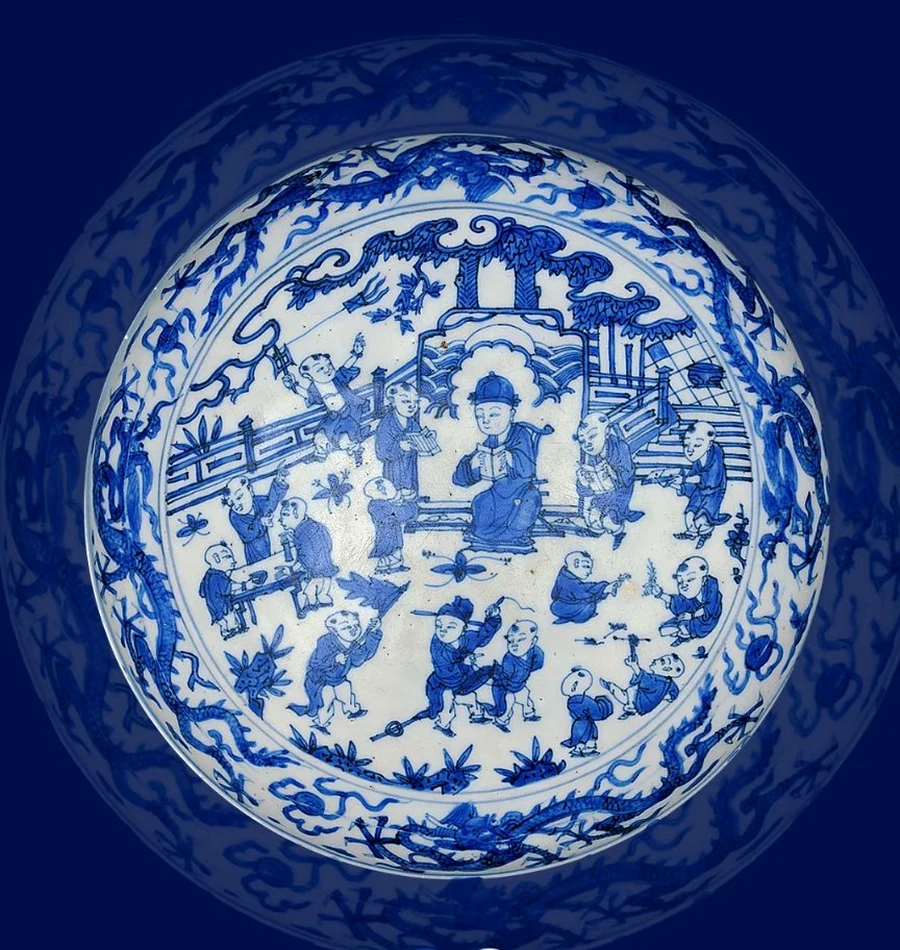
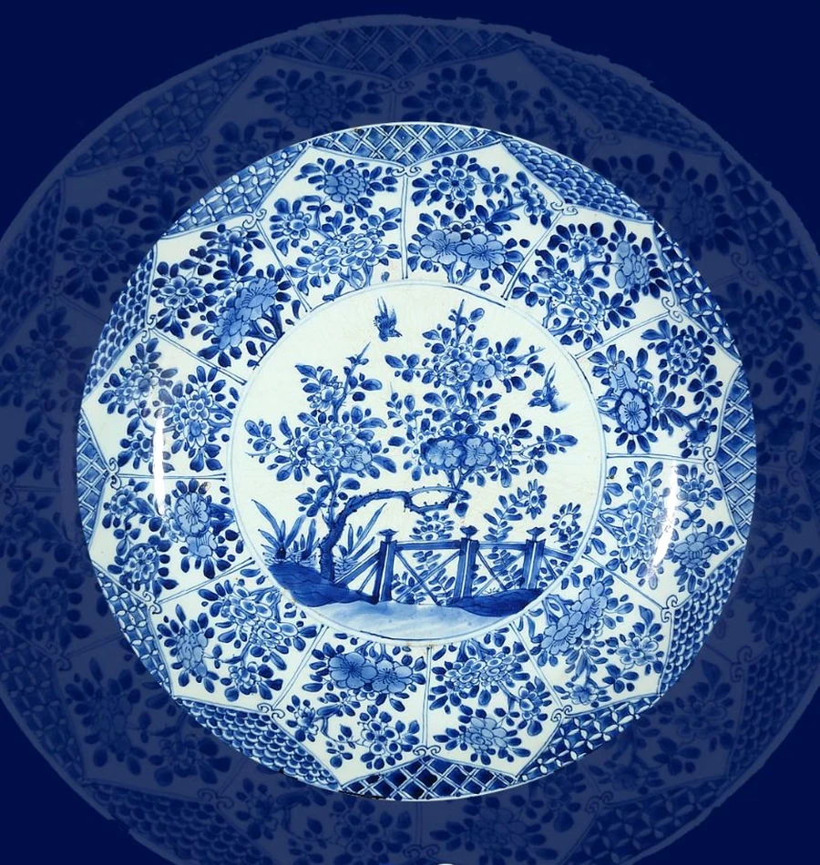
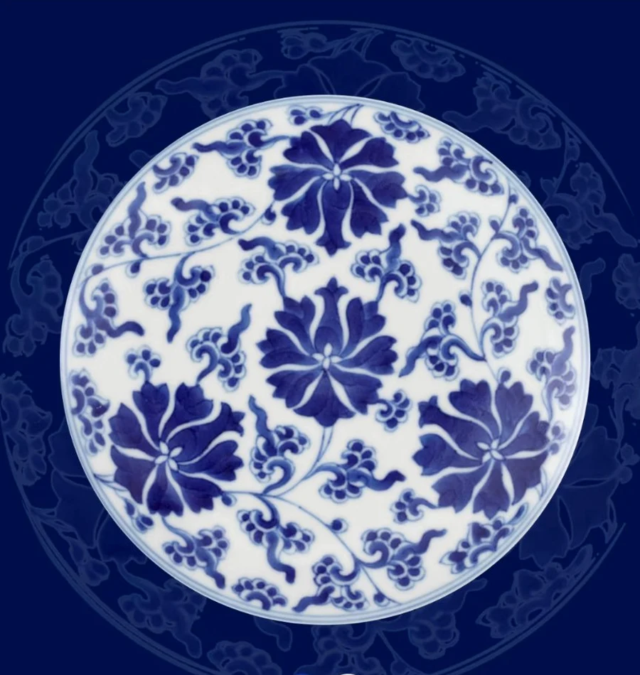
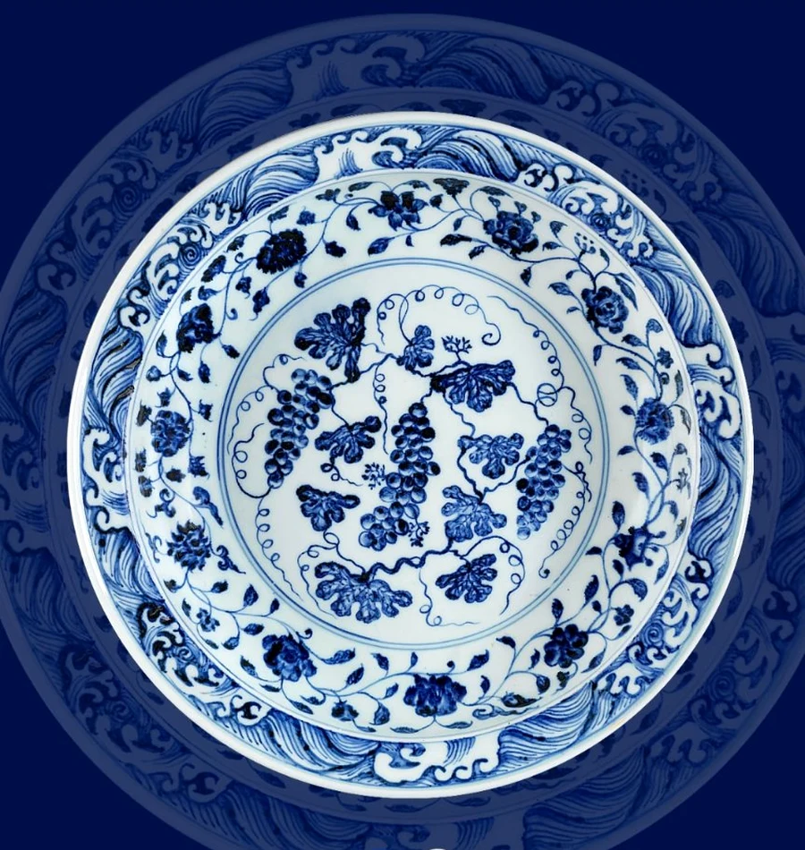
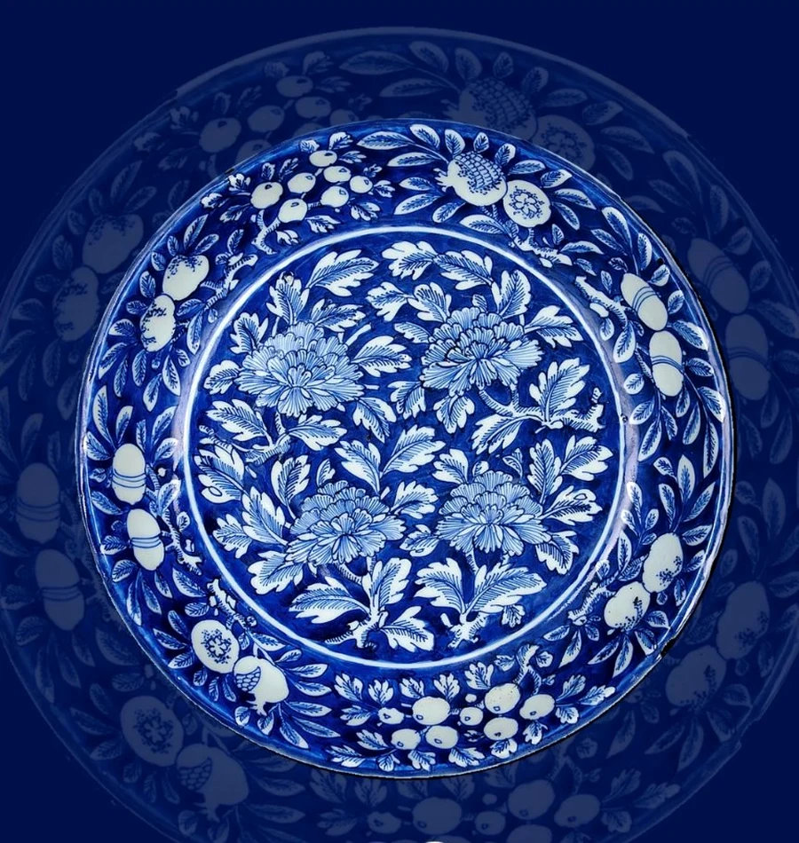

起点 · 九世纪
有人先试了一笔
唐代的长沙窑，工匠试着把蓝彩画在釉下。还很简单，却第一次证明了这条路走得通。
中途 · 一条商路
蓝从西边来
那时候最好的钴蓝，是从西亚沿着丝绸之路运来的。颜色本身就带着旅途。
相遇 · 元代景德镇
白瓷遇上蓝料
细腻的白胎、进口的钴料、够高的窑温，在景德镇凑齐了。成熟的青花，就此登场。
一间关于青花瓷的展厅
素胚为纸，钴蓝作墨，一笔一线皆落釉下。待千度窑火开过，那一抹蓝便凝在瓷骨里，历百年而不褪。由一线而见山河，由一器而识千年——这，便是青花。

向下翻页 · 七屏观展
展签 一 它是什么
青花瓷并不神秘。把下面三件事凑齐，你就已经懂它大半了——剩下的，交给眼睛和时间。
先有一块干净的白色瓷胎。它得够细、够白，蓝色的纹样画上去才显得清清楚楚。
蓝色不是染上去的，是把一种含钴的石头磨成粉、调成墨，拿来在胎上画画。
画完罩一层透明釉再烧。蓝被封在釉底下，所以摸上去是平的，用多久都不会掉色。
自外而内：釉 → 钴料 → 胎，所以叫「釉下彩」
你大概听人说过"釉下彩"，意思就是先画、后罩、再烧。蓝在釉的下面，而不是贴在上面。
展签 二 为何是蓝
白色好理解，蓝色却来之不易。青花之所以是青花，是因为一种远方的矿石，遇见了中国的瓷。
唐代的长沙窑，工匠试着把蓝彩画在釉下。还很简单，却第一次证明了这条路走得通。
那时候最好的钴蓝，是从西亚沿着丝绸之路运来的。颜色本身就带着旅途。
细腻的白胎、进口的钴料、够高的窑温，在景德镇凑齐了。成熟的青花，就此登场。

元 · 青花鸳鸯荷花纹花口盘展签 三 七百年
看盘子的变化，比看文字更快。下面这只盘，从元走到今天，一路换着模样。
蓝得酣畅，花纹一层压一层。
有的雄健，有的清淡，风格最多。

浓淡分出层次，像在瓷上作画。

文人拿起笔，画意进了器物。

茶器、文创、数字生成，继续被想象。

下一笔，也许由你来画。

展签 五 怎样出炉
揉泥、拉坯、画花、上釉，每一步不满意都可以推倒重来。可一旦进了窑，就只能等——温度差一点，一炉就废了。
把气泡揉出去，泥才听话。
辘轳一转，形状全在手上。
半干时旋削，定薄厚。
蘸着钴蓝落笔，不能改。
罩一层透明的外衣。
装进匣钵，隔开窑灰。
升到约一千三百度，慢慢来。
等它凉透，成没成，一眼见分晓。
出口 继续走
这里看到的只是个开头。往里走，你可以看泥怎么变成瓷、亲手画一只自己的蓝、沿着年代漫游，或者翻开图鉴慢慢查。
从一团泥到一只瓶，八道工序拆开来看，还能动手试。
↗ 其二说出你的想法，让 AI 帮你生成一件属于自己的青花。
↗ 其三沿着朝代一路走过去，看纹样和器型怎样一点点变形。
↗ 其四数百件纹样、器型和匠人的资料，按朝代和类别随手检索。
↗展厅按"它是什么、为何是蓝、如何变化、画着什么、怎样出炉、去哪里"布置。文物影像取自项目收集的资料，为便于参观，朝代与工艺叙述作了简化；严谨细节，可到资料库查证。
纹样 · 元代
富贵连绵，生生不息